Multiple Legends
Gilles Colling
2025-12-15
Source:vignettes/multiple-legends.Rmd
multiple-legends.RmdOverview
When a plot maps multiple aesthetics (colour, size, shape, etc.), ggplot2 creates separate legends for each. ggguides provides functions to control these legends individually:
-
Hide specific legends with
legend_hide() -
Keep only certain legends with
legend_select() -
Control display order with
legend_order_guides() -
Force merge/split with
legend_merge()andlegend_split() -
Position legends separately using
byparameter on position functions -
Style legends separately using
byparameter onlegend_style()
Example Plot
# Plot with multiple aesthetics
p <- ggplot(mtcars, aes(mpg, wt,
color = factor(cyl),
size = hp,
shape = factor(am))) +
geom_point() +
labs(color = "Cylinders", size = "Horsepower", shape = "Transmission")
p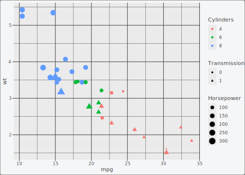
Hiding Legends
Use legend_hide() to remove specific legends while
keeping others:
# Hide the size legend
p + legend_hide(size)
# Hide multiple legends
p + legend_hide(size, shape)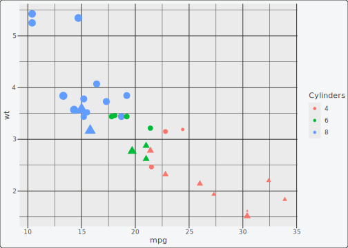
Selecting Legends
Use legend_select() to keep only certain legends
(inverse of legend_hide()):
# Keep only the colour legend
p + legend_select(colour)
# Keep colour and shape
p + legend_select(colour, shape)
Controlling Legend Order
By default, legends appear in an unspecified order. Use
legend_order_guides() to control the display order:
# Default order
p
# Size legend first, then colour, then shape
p + legend_order_guides(size = 1, colour = 2, shape = 3)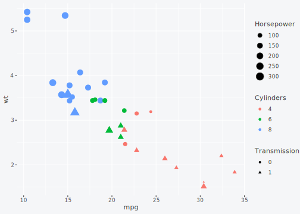
Merging and Splitting Legends
ggplot2 automatically merges legends when they have the same title
and matching labels. Use legend_merge() and
legend_split() to override this behavior.
Forcing Merge
# Plot where colour and fill map to the same variable
p_merge <- ggplot(mtcars, aes(mpg, wt, color = factor(cyl), fill = factor(cyl))) +
geom_point(shape = 21, size = 4, stroke = 1.5) +
labs(color = "Cylinders", fill = "Cylinders")
# Legends merge automatically when titles and labels match
p_merge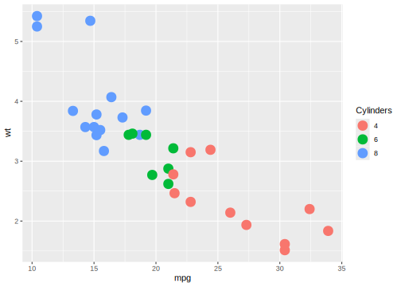
# Explicitly request merge (reinforces default behavior)
p_merge + legend_merge(colour, fill)
Forcing Split
# Force separate legends even when they could merge
p_merge + legend_split(colour, fill)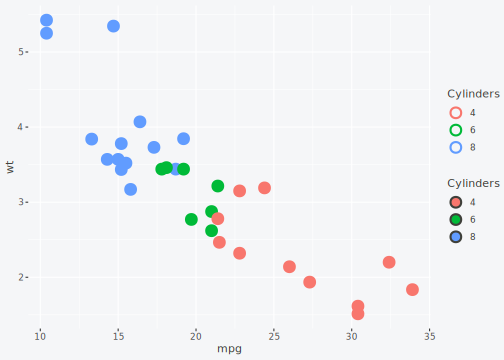
Positioning Legends Separately
Position functions (legend_left(),
legend_right(), legend_top(),
legend_bottom()) accept a by parameter to
position specific legends:
# Place colour legend on the left, size legend at bottom
p +
legend_hide(shape) +
legend_left(by = "colour") +
legend_bottom(by = "size")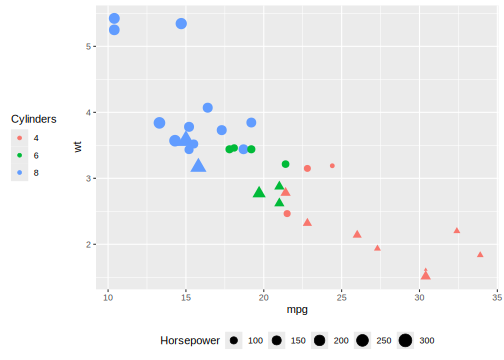
# Colour legend on top, size on right
p +
legend_hide(shape) +
legend_top(by = "colour") +
legend_right(by = "size")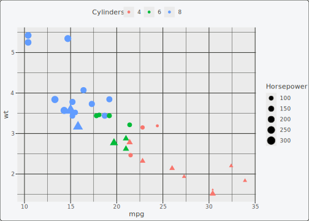
Styling Legends Separately
Use the by parameter on legend_style() to
apply different styles to different legends:
p +
legend_hide(shape) +
legend_style(title_face = "bold", background = "grey95", by = "colour") +
legend_style(size = 10, by = "size")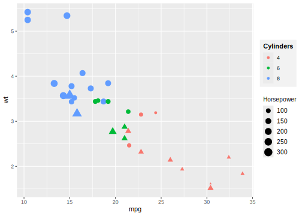
Combining Multiple Controls
All functions work together:
# Complex example: hide shape, position colour on left with bold title,
# position size at bottom with smaller text
p +
legend_hide(shape) +
legend_left(by = "colour") +
legend_style(title_face = "bold", title_size = 14, by = "colour") +
legend_bottom(by = "size") +
legend_style(size = 9, direction = "horizontal", by = "size")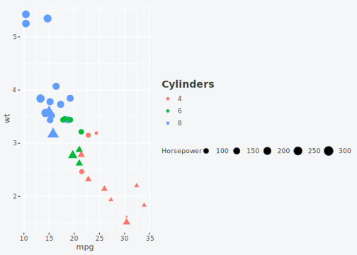
Summary
| Function | Purpose | Parameters |
|---|---|---|
legend_hide() |
Hide specific legends | Aesthetic names (unquoted) |
legend_select() |
Keep only specific legends | Aesthetic names (unquoted) |
legend_order_guides() |
Control legend display order | Named args: aes = order
|
legend_merge() |
Force legends to merge | Aesthetic names (unquoted) |
legend_split() |
Force legends to stay separate | Aesthetic names (unquoted) |
legend_left(by=) |
Position one legend on left | by = "aesthetic" |
legend_style(by=) |
Style one legend |
by = "aesthetic" + style args |
Learn more:
- Legend Positioning for single-legend placement
- Styling & Customization for legend appearance
- Patchwork Integration for multi-panel plots